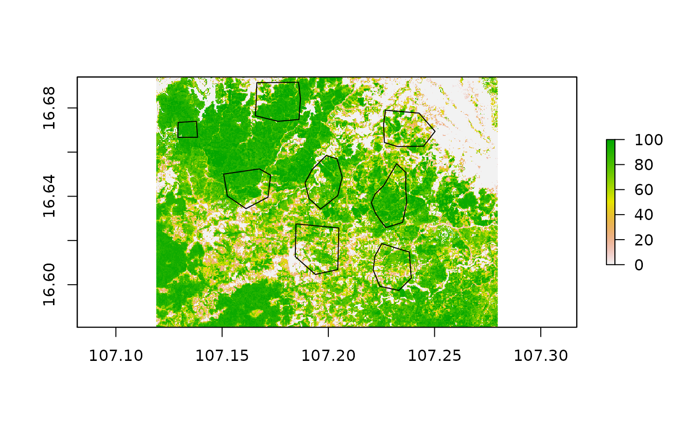

area_stats.Rmd
library(raster)
library(tibble)
library(dplyr)
library(tidyr)
library(ggplot2)
library(stringr)
library(sf)
library(plotly)
library(mapme.forest)In the vignette on Global Forest Watch we explained how to pre-process the Hansen dataset to model various forest definition requirements by national or international organizations. We also explained how we can obtain pseudo-yearly forest masks from the combination of the tree cover dataset for the year 2000 and the loss year layer.
In this section, we are taking a look how to obtain areal statistics for regions of interest from this pre-processed data. Evidently, the workflows explained here are therefore also valid for binary forest mask obtained from other sources. We are taking into consideration three different parameters in this section, which are of course the yearly forest cover within a region of interest, the yearly loss of forest cover as well as the CO2 emissions caused by forest cover loss.
For this last parameter, we are using an additional dataset, which requires some explanation before using it. The dataset describes the emission from above-ground woody biomass loss in the tropics (Zarin et al. 2016) and it reflects estimated tons of carbon dioxide emissions to the atmosphere as a result of above-ground biomass loss. Estimates are based on the collocation of above-ground live woody biomass density values for the year 2000 from (Baccini et al. 2012) with annual tree cover loss data from 2001 through 2018 from (Hansen et al. 2013).
For the responsible use of this dataset it is crucial to note, that all of the above-ground carbon is considered to be “committed” emissions to the atmosphere upon clearing. Emissions are “gross” rather than “net” estimates, meaning that information about the fate of land after clearing, and its associated carbon value, is not incorporated.
First, we read in the necessary datasets we need for the present calculation. Additionally to the tree cover and loss layer we need the dataset representing CO2 emissions of woody biomass as well as our regions of interest for which we want to derive aggregated values. We take a quick look at how our polygons of interest are spatially distributed over the study area.
# read in example data from package directory
treeCover = raster(system.file("extdata", "pkgTest_treecover2000.tif", package = "mapme.forest"))
names(treeCover) = "tree.cover"
lossYear = raster(system.file("extdata", "pkgTest_lossyear.tif", package = "mapme.forest"))
names(lossYear) = "loss.year"
co2Layer = raster(system.file("extdata", "pkgTest_co2_emission.tif", package = "mapme.forest"))
names(co2Layer) = "co2.emiss"
roi = st_read(system.file("extdata", "aoi_polys.gpkg", package = "mapme.forest"))## Reading layer `aoi_polys' from data source `/tmp/Rtmpnid9N6/temp_libpathc482fd6cf35/mapme.forest/extdata/aoi_polys.gpkg' using driver `GPKG'
## Simple feature collection with 8 features and 1 field
## geometry type: POLYGON
## dimension: XY
## bbox: xmin: 107.1291 ymin: 16.59741 xmax: 107.2502 ymax: 16.6916
## geographic CRS: WGS 84
Now, this is only a small test dataset, which only purpose is to demonstrate the functionality of the routines we developed here. In general, units of interest could be arbitrary polygons distributed over the globe, representing valuable ecosystems or protected areas, intervention regions of international donor organizations as well as complete countries or states. It really depends on the needs of your project, for which units to calculate the areal statistics for. The routines used here are optimized for parallel computing on rather large machines to process a lot of data in less time. However, they can also be used on smaller machines like laptops and office computers, especially if the regions of interest might be small in number and size.
We start here, in applying the pre-processing routine to our tree cover dataset to remove clumps below our desired threshold and to retrieve yearly binary forest masks.
# clump removal and threshold application to source data from the year 2000
treeCover_binary = prepTC(treeCover,
thresholdClump = 10,
thresholdCover = 50)
# creation of yearly maps based on binary raster and loss year layer
treeCover_yearly = getTM(treeCover_binary,
lossYear, 2000:2018)
# applying minimal mapping unit for the yearly layers
treeCover_yearly = stack(lapply(1:nlayers(treeCover_yearly), function(l){
treeCover_yearly[[l]] = prepTC(treeCover_yearly[[l]], thresholdClump = 10)
}))
# stack all layers to get time series 2000 to 2018
names(treeCover_yearly) = paste("y", 2000:2018, sep = "")Here, we present the standard approach to call our functions. The first might be to calculate the yearly forest area within each polygon. Note, that the area is calculated differently for projected raster datasets and raster data in geographic coordinates. The former uses the units of the projection to precisly calculate the area within a pixel, the latter estimates the area of a pixel based on its geographic position using raster::area. Projecting your data to a suitable projection will deliver more accurate results and it might be a good idea to project your data before applying the function. Here, we will compare the effect of projecting our raster data to a local coordinate reference system (CRS). We will choose UTM and use some code to calculate the UTM zone for our central point in the raster.
# calculate the corresponding utm zone
centroid = suppressWarnings(st_centroid(st_as_sfc(st_bbox(treeCover_yearly))))
zone = floor((st_coordinates(centroid)[1] + 180) / 6) + 1
utm = paste0("+proj=utm +zone=", zone," +ellps=WGS84 +datum=WGS84 +units=m +no_defs")
# reproject the raster data set
proj_TC_yearly = projectRaster(treeCover_yearly, crs = utm, method = "ngb")
# reproject the regions of interest
proj_roi = sf::st_transform(roi, utm)
# area calculation for unprojected raster
result_latlon = AreaCalc(treeCover_yearly,
studysite = roi[2,],
latlon=TRUE,
polyName = "id",
ncores = 2,
years = 2000:2018)
# area calculation fo projected raster
result_proj = AreaCalc(proj_TC_yearly,
studysite = proj_roi[2,],
latlon=FALSE,
polyName = "id",
ncores = 2,
years = 2000:2018)
# rescale area values to ha for unprojected results
area_latlon = st_drop_geometry(result_latlon) %>%
select(-id) %>%
mutate_all(function(x) x * 100) # rescale to ha
# rescalue area values to ha for projected results
area_proj = st_drop_geometry(result_proj) %>%
select(-id) %>%
mutate_all(function(x) x / 10000) # rescale to ha
# calculate difference summaries
diff = area_latlon - area_proj
summ = summary(unlist(diff))
summ## Min. 1st Qu. Median Mean 3rd Qu. Max.
## -0.7219 -0.5539 -0.5537 -0.3892 -0.2614 0.1677## [1] 0.1599743Above, you see that we projected the raster as well as our shapefile to UTM. If either one of them shows a different projection than the other, our function for the area calculation would through an error and stop the execution. We than apply the AreaCalc routine for both input datasets, one time specifying latlon=TRUE and the other time latlon=FALSE. This parameters let the function know if the area should be estimated based on the geographic position on the globe using raster::area()or if the area the raster data is handed to the function in a projected coordinated system. The former gives an area estimation in km², which is why we multiply the value with 100 to change the unit to ha. Since we choose a UTM projection for the other example, the map unit is in meters. We need to divide the values by 10000 in order to get to ha. Finally, we calculate the difference between these two matrices and summarize the differences between the values and plot a simple boxplot. We can see that the mean difference in the area estimates is -0.3892222 indicating that the non-projected raster dataset delivers area estimates which are on average 0.33 ha lower compared to the projected approach. An estimate of the difference in percent reveals that on average the difference is about -0.01%. Whether or not this margin of error is negligible depends on the application.
Note that in both function calls we included an argument called ncores which determines the number of cores used in parallel processing. If you do not wish to use parallel processing you can choose here a value of 1 which will make the function work in sequential mode. There might be different scenarios, when you may want to disable parallel computing. The most obvious one is that your machine does not have the necessary computing power for parallel processing though most modern shipped laptops are at least equipped with two or four processors. Another scenario might be that you are working on a very high number of small regions of interest and you want to efficiently use your local memory. When using the above functions as well as the functions for areal statistics, each polygon and the underlying raster datasets are processed simultaneously but independently. This leads to copying a lot of the input data which might cause troubles on smaller machines. If this is the case for you, it might make sense to call our functions in a parallel version of lapply. If used this way, less data will be simultaneously copied into the memory, but you can still parallelize your workflow. This approach might be less advisable, however, when your regions of interest are very large, for example countries and states. For these use cases we refer the reader to the article on Big Data Analyisis.
Also note that we used the sf::st_drop_geometry function to obtain only the areal data. The AreaCalc function and alike return the roi object, which is of class sf with the data columns amended by the areal statistics. This is important, because in addition to the areal statistics, in the returned objects we take the geometry information with us. This might not be useful in some applications, therefore you can drop the geometry by using sf functionality.
The calculation for forest loss area per year is very much alike the area calculation. However, next to the binary forest masks, we also add the loss year layer. Note, that for obvious reasons the forest loss could also be calculated on the the forest area information within the roi dataframe. Despite that we also include a own function to calculate the loss to support a wider range of use cases.
# calculation of forest loss area
loss_area = LossCalc(inputForestMap = treeCover_yearly,
inputLossMap = lossYear,
studysite = result_latlon,
latlon = TRUE,
polyName = "id",
ncores = 2,
years = 2000:2018)For the estimation of CO2 emissions corresponding to forest cover loss, we use a very similiar function call you have seen above and addtionally provide the CO2 layer.
# calculation of co2 emissions
co2_emission = CO2Calc(inputForestMap = treeCover_yearly,
inputLossMap = lossYear,
inputCO2Map = co2Layer,
studysite = result_latlon,
polyName = "id",
ncores = 2,
years = 2000:2018)We can now bind together the results we obtained in order to get one sf-object where all the areal statistics are found. For this, we use some dplyr functionality for data-handling which can be applied to sf-objects as well
# binding all areal statistics together
results = st_drop_geometry(result_latlon) %>%
left_join(st_drop_geometry(loss_area)) %>%
left_join(st_drop_geometry(co2_emission))With this data set at hand, we can start investigate the forest cover dynamics between our polygons. We will use a simple ggplot for visualization. Since the data currently is presented in a wide format, which means that each row represents one polygon, we need to transfer it to a long format before handing the data to ggplot.
# simple plot of yearly tree cover
plt = results %>%
gather("type", "area", -id) %>%
separate(type, into = c("var","year"), "_") %>%
mutate(year = as.factor(as.numeric(year)),
var = as.factor(var),
area = as.numeric(area),
id = as.factor(id)) %>%
ggplot(aes(x = year, y = area)) +
facet_grid(rows = vars(var), scales = "free_y") +
geom_line(aes(group = id, color = "red")) +
geom_point(aes(color = "red")) +
theme_minimal() +
theme(axis.text.x = element_text(angle = 45, hjust = 1))
ggplotly(plt)